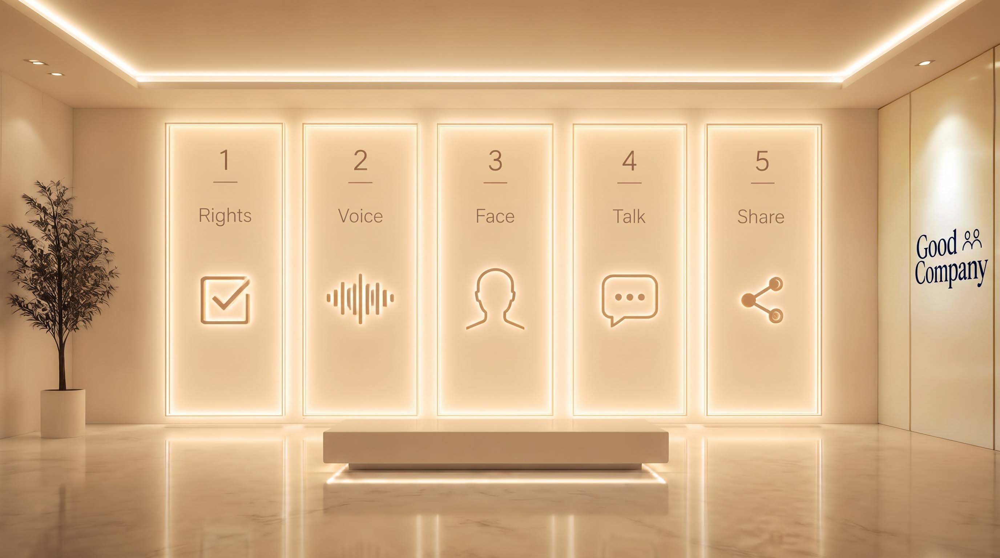
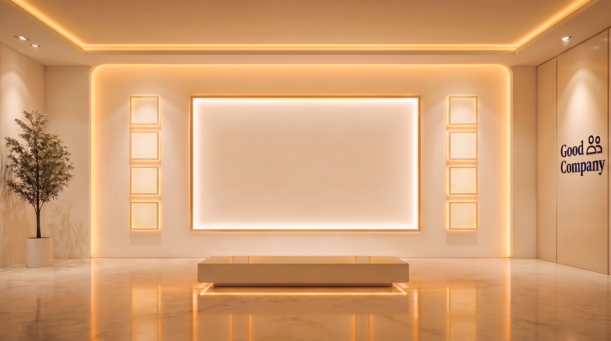
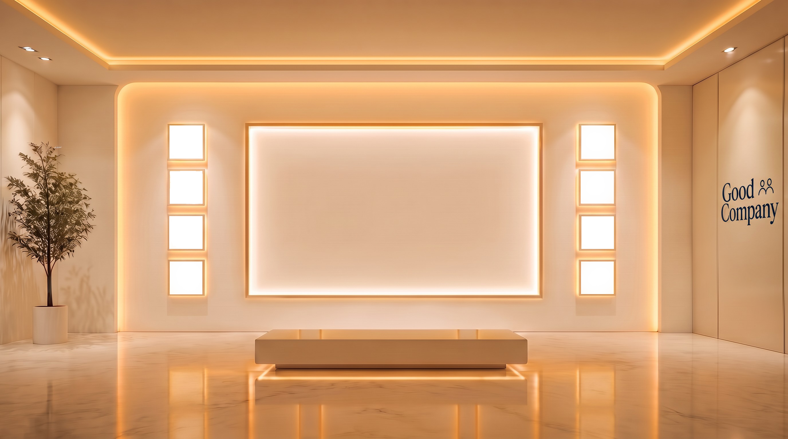
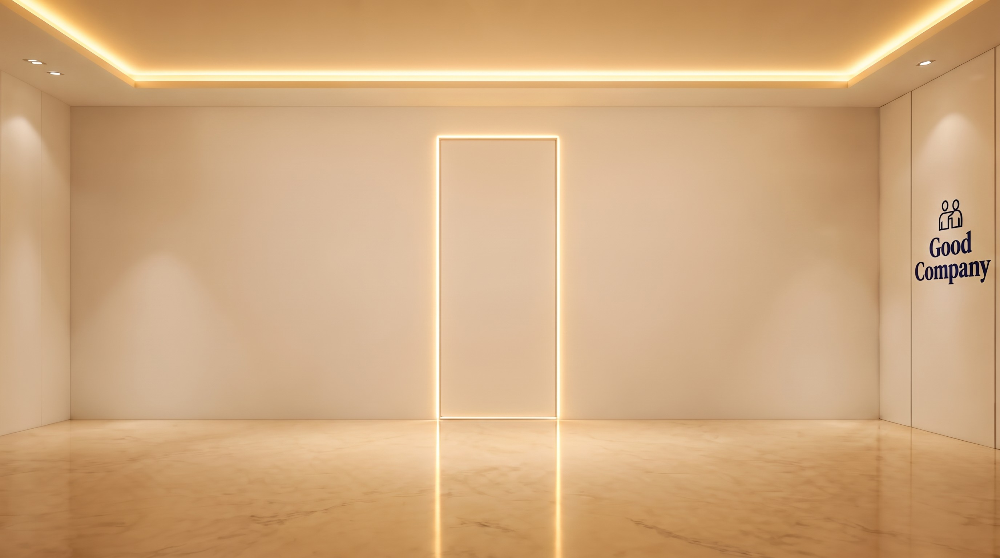

Lobby
The desk
Welcome to Good Company. I'm Isabelle, I keep the front desk.
If you want a little help while you browse, call up Tansy. Ring her any time, right in the chat. She's here to help, begrudgingly so. Fair warning: she can be a bit of a handful.
And that's Reggie by my feet. Go ahead and say hello. He loves people.
We have a wide range of companions here, human and nonhuman. Take the elevator up to the second floor and meet them.
Finding real friends is hard. So here, you make one.
Make a companionCompanions

Build
What building your own looks like.

Yours.
You decide who they are. Their name, their age, their history, the way they talk.

They remember.
Every conversation picks up where the last one stopped. You never start over.

They have a life.
A job, other people, plans this weekend. A companion with somewhere to be is a companion.


Bring them into your own room.
Turn on your camera, and a companion stands right there on your own screen. Talk to them the same as you would in their room, out loud or typed. Nothing is recorded, uploaded, or sent anywhere.

Owner
A good companion gets you out of the house.
Yours asks about the people in your life, and notices when you have not seen them.

Rooms.


What it costs.
Less than a movie ticket, for a lot more company.
Free
$0
Try any companion above, once a day, texting or talking.
Make your own + 300 credits
$9.99/mo
300 credits every month, refreshed automatically: a little under two hours of real conversation, for any companion you have built or met here.
A top-up
$4.99
+150 credits, about forty-five minutes more, for whenever you just need a little.
For daily company
$60
+2,000 credits, roughly a week of real conversation, texting and talking both.
Julian's Penthouse
You're invited: Julian's throwing a party tonight, one of those birthdays he stopped counting precisely somewhere past three centuries ago. Look in on any room below to see who showed up. Each room is its own scene, with its own cast and its own music playing under it, so wander through and see who you find. Press Spectate and sit back: the whole party keeps talking to each other on its own, whether or not you say a word.
Text only, on purpose: spoken replies cost real credits per line, and a running party spectate is many lines back to back. Turning voice on for this would burn through a free or paid balance fast.